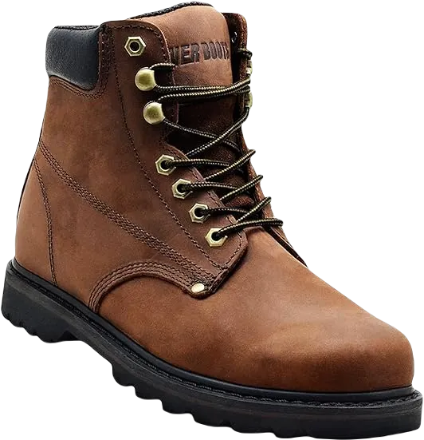

Top 10 Best Shoes for Bone Spurs 2024
A bone spur is an extra growth of bone that typically develops where two or more bones meet. During the body’s repair process, projections can form, leading to the development of bone spurs, which feel like hard lumps beneath the surface. Several risk factors contribute to this condition, including osteoarthritis, age, wearing tight shoes, physical activity, and flat feet.
A heel spur is specifically associated with the abnormal growth of the heel bone, which is the main bone in the foot responsible for absorbing shock and pressure. When calcium deposits form, they can cause connective tissue to pull away from the heel, resulting in a bony protrusion, or heel spur. This condition can lead to significant pain in the rear foot, especially during standing or walking. Additionally, bone spurs on the top of the foot may develop due to osteoarthritis, with other contributing factors being foot injuries, obesity, and wearing tight shoes.
-
#1
Timberland men’s white ledge mid
.webp)
These boots are constructed from 100% leather, with a durable rubber sole. They feature a padded collar for added comfort and are designed to be long-lasting. Equipped with a removable high-density EVA footbed, these boots also offer excellent breathability and a waterproof membrane that keeps your feet dry and cool.
The polyurethane shank provides complete support to the midfoot and heel, ensuring stability during wear. Additionally, the lace-up design allows for a secure fit, minimizing the risk of muscle strain.
These features make these boots an ideal choice for individuals experiencing lower back pain, as they offer both support and comfort throughout the day. -
#2
Skechers Men’s work relaxed
.webp)
There are several options for boots that cater to individuals with bone spurs, but some stand out by providing exceptional comfort. These boots, in particular, are designed with extra cushioning to enhance your overall comfort.
Lined with soft fabric, they offer breathability and durability, ensuring they can withstand daily wear. The engineered footbed features a pair of cushioned layers that keep your feet feeling comfortable throughout the day.
Additionally, the midsole is designed with shock-absorbing properties, allowing these boots to easily handle the strain of hard surfaces. They are the perfect choice for those experiencing back pain and needing to stand for long periods. -
#3
Timberland PRO power strain
.webp)
Timberland is a reputable brand known for producing high-quality boots that emphasize comfort. Their designs are stylish and appealing, making them a great choice for both work and leisure.
The Timberland Men’s Pro Boot features an alloy safety toe, providing essential support while you work. Inside, the boots are lined with breathable mesh, ensuring ventilation throughout the day. Additionally, the removable cushioning offers long-lasting comfort, adapting to your foot's shape.
The outer sole is slip-resistant and incorporates an anti-fatigue feature, making these boots suitable for extended wear without discomfort. -
#4
Caterpillar Men’s Second Shift Steel Toe
.webp)
The Caterpillar Men’s Second Shift Steel Toe Work Boot is a high-quality imported product designed for durability and style. Made from 100% leather, this ankle-cut work boot protects your feet from compression and impact while ensuring comfort. The synthetic sole features a breathable insole for added comfort, and the slip-resistant outsole provides excellent grip on low-traction surfaces.
With Goodyear Welt construction, these boots offer flexibility, while the steel shank enhances stability and support. They also include a removable PU shock liner, a padded ankle for extra comfort, and a nylon mesh lining that promotes breathability.
The shaft measures approximately 6 inches from the arch, the heel is about 1.25 inches high, and the platform measures around 0.75 inches. All these features come at a reasonable price, making it an excellent choice for work footwear. -
#5
Irish Setter Men’s 6″ 83605
.webp)
The Irish Setter Men’s 6″ 83605 Work Boot is expertly handcrafted to provide a complete zone of comfort. This work boot features highly protective electrical hazard (EH) construction in both the heel and sole, having been rigorously tested by the American Society of Testing and Materials for protection against electrocution. The ASTM labels inside the shoes clearly indicate whether they are EH-rated, significantly reducing hazards, as the outsole is infused with electrically energized components. The entire boot is crafted from non-conductive materials, ensuring that no electrical charge can pass through your body, effectively isolating you from the ground.
Designed with a wedge sole, these boots prioritize comfort during work, minimizing muscle strain even during long hours at the office. Many users have reported relief from conditions such as heel spurs and knee pain while wearing them. The heel measures approximately 1.5 inches, providing additional support without sacrificing comfort.
Overall, the combination of safety features and ergonomic design makes these boots an excellent choice for those seeking both protection and comfort in their work footwear. -
#6
Skechers for Work 77055
.webp)
If you're in need of comfortable and durable footwear, these boots are an excellent choice. Designed to provide protection on various surfaces, they offer substantial insulation against electrically energized objects. Tested to withstand up to 18kV at 60Hz under dry conditions, they ensure safety in potentially hazardous environments.
The Skechers for Work 77055 Cankton Athletic Steel Toe boots exemplify lightweight construction while delivering rock-solid protection. With their appealing design, the Skechers Cankton Athletic Men’s Steel Toe Tennis Shoe features a blend of black charcoal on its mesh upper, elevating its aesthetic appeal to another level.
Additionally, the steel toe cap provides full protection, making these sneakers not only stylish but also functional for those needing reliable safety footwear. -
#7
EVER BOOTS “Tank Men’s Soft Toe
The Tank Men’s Soft Toe Oil Full Grain Leather Work Boots are constructed from 100% leather, ensuring durability and a professional appearance. The shaft measures approximately 7 inches from the arch, providing ample coverage and support for various work conditions.
Designed with a rubber sole, these boots offer stability and traction, making them suitable for navigating any type of terrain. Their versatile design is ideal for workers in construction, contracting, and electrical fields, ensuring reliable performance on the job.
The removable insole allows for customization to suit your comfort preferences, while the integrated steel shank helps alleviate pressure during activities like climbing ladders and descending stairs, enhancing overall usability and comfort. -
#8
Vionic Men’s Khai Casual Slip On
.webp)
Vionic boots are an excellent choice for individuals dealing with plantar fasciitis, as they blend style with scientific support. These boots are not only fashionable but also suitable for casual wear, featuring a removable footbed for added comfort.
The Vionic Men’s shoes are designed to provide Vio Motion Support, promoting the natural movement of the foot during various activities. This innovative design enhances stability in the heel region, which is essential for those with foot conditions.
Additionally, these boots offer exceptional arch support and cushioning in the forefoot, ensuring a comfortable experience throughout the day. -
#9
HOKA One Bondi 7
.webp)
HOKA One offers a wide range of shoes tailored for runners with various foot types, including the BONDI 7 model specifically designed for those suffering from plantar fasciitis. These shoes feature cushioning that effectively reduces impact forces while running or walking on hard surfaces. Additionally, there are different versions available for both men and women.
The rubber soles of these shoes are lightweight yet durable, making them suitable for extended use. Engineered with a breathable textile mesh upper, they ensure optimal airflow, keeping your feet cool and comfortable.
The padded insole provides excellent support, while the midsole is integrated with EVA foam that absorbs shock and enhances stability. Durable TPU overlays offer extra support and help maintain midfoot structure, ensuring a secure fit during your runs. -
#10
Serena Ankle boots
These boots are suitable for everyone to wear daily, offering both comfort and support. They should fit snugly and have a sturdy heel for optimal stability.
Podiatrists recommend Vionic for their exceptional design and benefits. These boots not only look stylish but also promote foot health.
With superior arch support and cushioning, they feature shock-absorbing properties that help reduce the impact on your feet, making them a great choice for everyday wear.